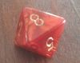

2.3 Wahrscheinlichkeit - da war doch was
Bevor der Begriff der Wahrscheinlichkeit eingeführt wird, beschäftigen wir uns mit den Grundbausteinen der Wahrscheinlichkeitsrechnung, den sogenannten zufälligen Ereignissen.
Zufallsexperimente
Bei der Durchführung vieler Experimente kann eines von mehreren möglichen Ergebnissen eintreten. Dabei sind zwar die verschiedenen Ergebnisse, die eintreten können bekannt, vor der Durchführung des Experiments weiß man jedoch nicht, welches Ergebnis tatsächlich eintreten wird. In solchen Fällen sagt man, das Ergebnis hängt vom Zufall ab. Deshalb nennt man derartige Experimente auch Zufallsexperimente.
Ein Zufallsexperiment liegt vor, wenn folgende vier Bedingungen erfüllt sind:
Ein Zufallsexperiment kann verschieden ausgehen.
Alle möglichen Ausgänge oder auch Ergebnisse des Experiments können vor dem Experiment angegeben werden.
Wie das Experiment ausgehen wird, lässt sich nicht mit Sicherheit voraussagen.
Das Experiment kann unter gleichen Bedingungen beliebig oft wiederholt werden.
Beispiele für Zufallsexperimente sind:
Würfeln, eine Münze werfen, Lotto spielen, einen Gegenstand blind aus einem Sack ziehen, die Körpergröße, das Gewicht oder auch den Blutdruck einer zufällig ausgewählten Person messen usw..
Aufgabe 1
Ein Zufallsexperiment ist ein Vorgang, dessen man nicht kann. Bei einem sollen Ausgänge möglich sein und es soll unter den Bedingungen wiederholbar sein.
Eine Münze oder zählen zu Zufallsexperimenten. ist kein Zufallsexperiment, da kein Zufall im Spiel ist.
Aufgabe 2
Entscheide, ob es sich um ein Zufallsexperiment handelt.
Lose ziehen
Würfeln
Die Temperatur bestimmen, bei der Eis schmilzt
Blind eine Spielkarte aus einem Kartendeck ziehen
Die Innenwinkelsumme eines zufälligen Dreiecks bestimmen
Die Ergebnismenge eines einfachen Zufallsexperiments
Die möglichen Ausgänge eines Zufallsexperiments werden als Ergebnisse bezeichnet. Die Menge der möglichen Ausgänge bezeichnet man als Ergebnismenge. Sie fasst alle Ausgänge eines Zufallexperiments zusammen.
Schreibweise: \(\Omega = \{a,\;b,\;c\}\)
Sprich: “Die Ergebnismenge Omega besteht aus den Ergebnissen a, b und c.”
Beispiele:
Eine Münze werfen hat die Ergebnismenge: \(\Omega=\{Kopf,\; Zahl\}\)
Würfeln hat die Ergebnismenge: \(\Omega=\{1\;, 2,\; 3,\;4,\;5,\;6\}\)
An dem unten abgebildeten Glücksrad drehen hat die Ergebnismenge: \(\Omega=\{1\;, 2\;, 3\}\)

Aufgabe 1
Notiere die Ergebnismengen für folgende Zufallsexperimente:
- Würfeln mit folgenden Würfeln


- Man dreht folgende Glücksräder

- Man würfelt zwei “normale” Würfel und bildet anschließend die Augensumme.
Aufgabe 2
Beschreibe passende Zufallsexperimente für folgende Ergebnismengen.
\(\Omega = \{weiß,\; schwarz,\; rot,\; blau \}\)
\(\Omega = \{Niete,\; kleiner\;Gewinn,\; mittlerer\;Gewinn,\; großer\;Gewinn \}\)
\(\Omega = \{Song1,\; Song2,\; Song3,\; Song4 \}\)
Zufällige Ereignisse
Ein zufälliges Ereignis (oder einfach Ereignis) ist eine Teilmenge der Ergebnismenge. Ein Ereignis ist also ein möglicher Versuchsausgang eines Zufallsexperiments, der aus einem oder mehreren Ergebnissen besteht.
Mit anderen Worten: Mehrere Ergebnisse können zu einem Ereignis zusammengefasst werden.
Schreibweise: \(E=\{a\;,b\;,c\}\)
Beispiele:
- Das Würfeln einer geraden Zahl kann geschrieben werden als \(E=\{2,\;4,\;6\}\)
- Das Würfeln einer Zahl kleiner 3 kann geschrieben werden als \(E=\{1,\;2\}\)
Es gibt drei besondere Ereignisse:
Das Elementarereignis: Es enthält nur ein Ergebnis. [Eine 1 würfeln oder “Kopf” werfen.]
Das sichere Ereignis: Es enthält alle möglichen Ergebnisse und tritt daher bei jeder Durchführung des Zufallsexperiments ein. [Eine 1, 2, 3, 4, 5 oder 6 würfeln. “Kopf” oder “Zahl” werfen.]
- Das unmögliche Ereignis: Es enthält kein Ergebnis. [Eine 8 würfeln oder “Rand” werfen.]
Aufgabe 1
Du hast folgende Urne. In ihr sind verschieden farbige, nummerierte Kugeln.

Als Zufallsexperiment zieht man nun eine Kugel aus der Urne. Formuliere Ereignisse, die folgende Eigenschaften erfüllen.
Die Ereignismenge umfasst 3 Ergebnisse.
Die Ereignismenge umfasst kein Ergebnis.
Die Ereignismenge umfasst 4 Ergebnisse.
Die Ereignismenge umfasst ein Ergebnis.
Die Ereignismenge umfasst 6 Ergebnisse.
Aufgabe 2
Schreibe die Ereignismengen zu folgenden Ereignissen auf.
Bei einem Würfelwurf fällt eine ungerade Zahl.
Beim Roulett wird kein schwarzes und kein rotes Feld getroffen.
Alle möglichen Geburtstage im Monat Februar für die gilt, dass sie nach dem 29.2. stattfinden.
Aus einem Skatspiel (32 Karten) wird entweder eine Herz-Karte gezogen oder ein Ass.
Aufgabe 3
Formuliere zu den folgenden zu einem Würfelwurf gehörenden Ereignismengen passende Ereignisse.
\(E=\{1,\;2,\;3\}\)
\(E=\{2,\;4,\;6\}\)
\(E=\{1\}\)
\(E=\{5,\;6\}\)
Wahrscheinlichkeit eines Ereignisses
Die Wahrscheinlichkeit dafür, dass bei einem Zufallsexperiment ein bestimmtes Ereignis eintritt, wird mit einer Zahl zwischen 0 und 1 beschrieben.
Dabei bedeutet eine Wahrscheinlichkeit von 0, dass das Ereignis sicher nicht eintreten kann. Es ist ein unmögliches Ereignis [z.B. mit einem normalen Spielwürfel eine 8 würfeln]. Bei einer Wahrscheinlichkeit von 1 wiederum trifft das Ereignis sicher ein [z.B. mit einem normalen Spielwürfel eine 1, 2, 3, 4 ,5 oder 6 würfeln]. Das bezeichnet man als sicheres Ereignis.
Das lateinische Wort für Wahrscheinlichkeit ist probabilitas. Das englische Wort ist probability. Daher benutzt man in der Mathematik ein P. Wenn man \(P(Ereignis)\) schreibt, dann steht da kurz und knapp der Ausdruck “die Wahrscheinlichkeit des Ereignisses”.
Als Beispiel muss mal wieder der Münzwurf herhalten:
Schreibweise: \(P(Kopf)=0,5\quad\)
Sprich: “Die Wahrscheinlichkeit dafür, dass das Ereignis”Kopf" eintritt ist 0,5 oder 50%."
Was heißt das nun: Wirft man die Münze beispielsweise 100 Mal, so kann man etwa 50-Mal “Kopf” erwarten.
Zur Veranschaulichung von Wahrscheinlichkeiten kann man sich folgenden Maßstab vorstellen:

Hier sind einige Ereignisse auf diesem Maßstab eingeordnet:

Beispiele:
\(P(Eins\;würfeln)=\frac{1}{6}\):
Die Wahrscheinlichkeit eine Eins zu würfeln ist \(\frac{1}{6}\). Das heißt, würfelt man 100 Mal, kann man etwa 17 Mal eine Eins erwarten.
\(P(Regen)=30\%\):
Eine Regenwahrscheinlichkeit von 30% bedeutet, dass man erwarten kann, dass es an 30 von 100 vergleichbaren Tagen, die alle eine Regenwahrscheinlichkeit von 30% haben, regnet.
Aufgabe 1
Was bedeuten die folgenden mathematischen Ausdrücke? Schreibe als Satz.
\(P(Augensumme\;12\;mit\;zwei\;Wuerfeln)=\frac{1}{36}\)
\(P(blind\;eine\;gelbe\;Murmel\;aus\;der\;Hosentasche\;ziehen)=\frac{1}{4}\)
\(P(blind\;ein\;h\;tippen)=\frac{1}{70}\)
Aufgabe 2
Schreibe die Sätze kurz und knapp als mathematischen Ausdruck.
Die Wahrscheinlichkeit dafür, dass Nepomuk eine Antwort auf eine Frage weiß, ist 64%. Stellt man ihm also 100 vergleichbare Fragen, so kann man erwarten, dass er 64 von diesen Fragen beantworten kann.
Die Wahrscheinlichkeit dafür, dass ein Marmeladenbrot auf der Marmeladenseite landet, ist 87%. Schmeißt man also das Marmeladenbrot 100 Mal vom Tisch, kann man erwarten, dass es 87 Mal auf der Marmeladenseite landet. Leider ist dann keine Marmelade mehr auf der Marmeladenseite.
Wie bestimmt man Wahrscheinlichkeiten?
Um nun die Wahrscheinlichkeiten von Ereignissen bei einem Zufallsexperiment zu bestimmen, gibt es verschiedene Strategien. Zwei habt ihr bereits kennengelernt. Die sollen hier noch einmal wiederholt werden.
Die erste Strategie
Man wiederholt das Zufallsexperiment häufig, um so die Wahrscheinlichkeit der verschiedenen möglichen Ausgänge schätzen zu können. Bei genügend großer Anzahl von Wiederholungen des Zufallsexperiments nähern sich die relativen Häufigkeiten der Ereignisse den theoretischen Wahrscheinlichkeiten dieser Ereignisse an. Dieser Zusammenhang wird als empirisches Gesetz der großen Zahlen bezeichnet.
Die zweite Strategie
Es gibt auch Zufallsexperimente, bei denen man sich die Wahrscheinlichkeiten der einzelnen Ergebnisse durch theoretische Überlegungen herleiten kann. Die wichtigsten Vertreter dieser Zufallsexperimente sind die Laplace-Experimente, bei denen alle Elementarergebnisse gleich wahrscheinlich sind.
Das empirische Gesetz der großen Zahlen
Wird ein Zufallsexperiment sehr oft durchgeführt, so stabilisieren sich die relativen Häufigkeiten eines Ergebnisses um einen festen Wert. Dieser Wert kann dann als Schätzwert für die Wahrscheinlichkeit des Ergebnisses verwendet werden.
Die Frage danach, wie viele Wiederholungen des Zufallsexperiments denn nun genug sind, kann dabei leider nicht eindeutig beantwortet werden. Die Antwort bleibt vage: VIELE!
Übrigens: Das Gesetz der großen Zahlen sagt nichts darüber aus, wie die absoluten Verteilungen einer Zufallsversuchsreihe aussehen muss. Das heißt, nur weil man bisher sehr wenig 6-en gewürfelt hat, müssen jetzt nicht viele 6-en fallen, um “den Rückstand auszugleichen”…
Aufgabe 1
Wirf das Schwein!
Setze die Anzahl der Würfe auf 10. Wiederhole die Wurfserie ein paar Mal und beobachte die Ergebnisse (auch die relativen Häufigkeiten). Was stellst du fest?
Setze die Anzahl der Würfe auf 100. Wiederhole die Wurfserie ein paar Mal und beobachte die Ergebnisse (auch die relativen Häufigkeiten). Was stellst du fest?
Setze die Anzahl der Würfe auf 10000. Wiederhole die Wurfserie ein paar Mal und beobachte die Ergebnisse (auch die relativen Häufigkeiten). Was stellst du fest?
Aufgabe 2
Drehe das Glücksrad!
Drehe das Glücksrad (“Rad drehen”) mindestens 200 Mal. Beobachte dabei, was sich in der Tabelle und was sich im Diagramm ändert. Führe drei Serien durch.
Beschreibe das Experiment in eigenen Worten.
Aufgabe 3
Hans arbeitet als Kontrolleur für die KVB. In letzter Zeit hat er 1235 zufällig ausgewählte Personen kontrolliert und dabei 87 Schwarzfahrer:innen entdeckt.
Wie wahrscheinlich ist es, dass die nächste Person, die er kontrolliert, keinen Fahrschein hat?
Mit wieviel Verlust muss die KVB jährlich rechnen, wenn sie monatlich 27.000.000 Fahrgäste transportiert und ein Fahrschein 3€ kostet?
Aufgabe 4
Frau D. hat einen Würfel 125 Mal geworfen, ihre Ergebnisse protokolliert und folgende Häufigkeitstabelle erstellt:
| Augenzahl | 1 | 2 | 3 |
|---|---|---|---|
| Häufigkeit | \(\quad\quad 36\) | \(\quad\quad 69\) | \(\quad\quad 20\) |
Leider hat sie vergessen, welchen Würfel sie verwendet hat. Sie weiß nur noch, dass eines der drei folgenden Würfelnetze zu dem verwendeten Würfel passen muss.
A

B

C

Welchen Würfel hat sie wahrscheinlich verwendet? Begründe deine Antwort.
Aufgabe 5
Im Jahr 2017 gab es 136,3 Mio. zahlende Nutzer von Musik-Streamingdiensten. Dabei verteilen sich die Nutzer auf folgende Anbieter:
| Spotify | Apple Music | Amazon Music | Andere |
|---|---|---|---|
| \(\quad\quad 54,52 Mio.\) | \(\quad 25,897 Mio.\) | \(\quad 16,356 Mio\) | \(\quad\quad 39,527 Mio.\) |
Auf der Straße werden nun zufällig Passanten angesprochen. Wenn sie zahlende Nutzer von einem Streamingdienst sind, sollen sie befragt werden. Wie wahrscheinlich ist es, dass ein auf diese Weise zufällig ausgewählter Nutzer eines Streamingdienstes…
… Kunde von Amazon Music ist?
… nicht Kunde von Apple Music ist?
… Kunde von Spotify oder einem anderen Dienst (Andere) ist?
Laplace-Experimente und ihre Wahrscheinlichkeiten
Ein Zufallsexperiment, bei dem alle endlich vielen Elementarergebnisse die gleiche Wahrscheinlichkeit haben, heißt Laplace-Experiment. Sind n Ergebnisse möglich, so ist die Wahrscheinlichkeit jedes einzelnen Ergebnisses \(1 \over n\).
Beispiele für Laplace-Experimente sind würfeln (jede Augenzahl hat die gleiche Wahrscheinlichkeit \(1 \over 6\)) oder auch eine Münze werfen (die möglichen Ausgänge “Kopf” und “Zahl” haben beide die Wahrscheinlichkeit \(1 \over 2\)).
Bei einem Laplace-Experiment hat ein Ereignis die Wahrscheinlichkeit: \[P(E)=\frac{Anzahl\;der\;Ergebnisse,\;die\;zum\;Ereignis\;gehören}{Anzahl\;aller\;möglichen\;Ergebnisse}\]
Die Wahrscheinlichkeit gibt hier also an, welche relative Häufigkeit eines Ergebnisses bei sehr vielen Wiederholungen erwartbar ist.
Was heißt das?
Stelle dir vor du würfelst 100-Mal mit einem fairen Würfel. Dann kannst du also erwarten, 17 Mal eine Zwei zu würfeln.
Beispiel
Betrachte das folgende Zufallsexperiment:

Man zieht eine Kugel aus der Urne. Da jede Kugel gleich groß ist, zieht man jede Kugel mit der gleichen Wahrscheinlichkeit. Es handelt sich also um ein Laplace-Experiment.
Wie wahrscheinlich ist es nun die Farbe grün zu ziehen?
\(P(gruen)=\frac{1}{4}=0,25\), da eine der vier Kugeln grün ist.
Entsprechend gilt für die Wahrscheinlichkeit eine blaue Kugel zu ziehen:
\(P(blau)=\frac{3}{4}=0,75\), da drei der vier Kugeln blau sind.
Wie wahrscheinlich ist es die Zahl Zwei zu ziehen?
\(P(Zwei)=\frac{2}{4}=0,5\), da zwei der vier Kugeln mit einer Zwei beschriftet sind.
Aufgabe 1
In einer Urne befinden sich 20 Kugeln, die mit den Zahlen von 1 bis 20 beschriftet sind. Fatu zieht eine Kugel. Mit welcher Wahrscheinlichkeit …
… zieht sie die Kugel mit der Zahl 12?
… zieht sie eine Kugel mit einer durch 3 teilbaren Zahl?
… zieht sie eine Kugel mit einer Zahl, die größer als 11 ist?
… zieht sie eine Kugel mit einer Quadratzahl?
Aufgabe 2
Der Teufel schlägt dir ein kurzes Würfelspiel vor. Du darfst dich dabei für eine Gewinnregel entscheiden. Du würfelst mit einem normalen Spielwürfel und gewinnst …
… bei einer geraden Zahl.
… bei einer ungeraden Zahl.
… bei einer Zahl kleiner 5.
… bei einer Zahl größer 5.
Für welche Regel solltest du dich entscheiden? (Hier geht’s um deine Seele!!)
Berechne für jeden der obigen Fälle die Gewinnwahrscheinlichkeit.
Aufgabe 3
Ein Kartenspiel hat 32 Karten mit den Farben: Herz, Karo, Pik und Kreuz. In jeder Farbe gibt es jeweils die Karten 7, 8, 9, 10, Bube, Dame, König, Ass.
Wie hoch ist die Wahrscheinlichkeit für folgende Ereignisse:
Es wird eine Karte der Farbe Karo gezogen.
Es wird eine Dame gezogen.
Es wird keine 10 gezogen.
Aufgabe 4
Hier steht eine Urne, die noch keine Kugeln enthält.

Befülle die Urne jeweils so, dass die geforderten Wahrscheinlichkeiten eintreten. Die Grundmenge der Kugeln darfst du dabei frei wählen.
Die Wahrscheinlichkeit eine blaue Kugel zu ziehen ist 25%.
Die Wahrscheinlichkeit eine rote Kugel zu ziehen ist 10%.
Die Wahrscheinlichkeit eine grüne Kugel zu ziehen ist 15%.
Die Wahrscheinlichkeit eine gelbe Kugel zu ziehen ist 50%.
Die Wahrscheinlichkeiten aus a), b), c) und d) sollen gleichzeitig eintreten.